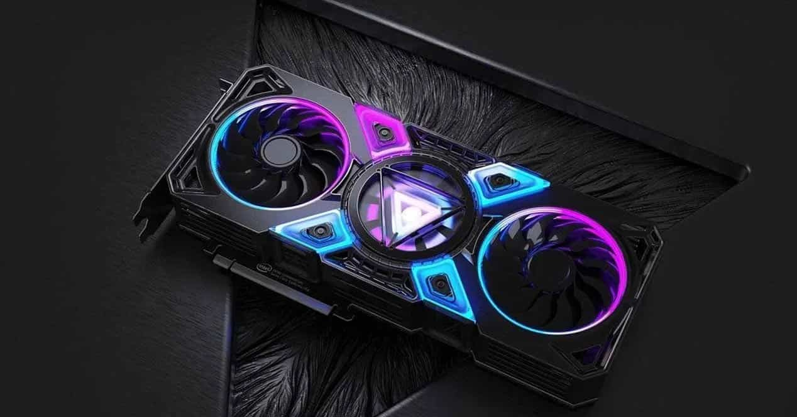

¿QUE ES UNA TARJETA GRÁFICA?
En este sitio, encontraras todo lo que necesitas saber sobre las Tarjetas gráficas, también llamadas:"tarjeta de video", "tarjeta de gráficos", "placa de video" o "placa gráfica"
Una tarjeta gráfica es un componente de hardware en una computadora que se encarga de procesar y generar imágenes para ser visualizadas en un monitor. Se conecta a la placa madre y permite un mejor rendimiento gráfico y una mayor capacidad de juegos y aplicaciones que requieren gráficos avanzados. Es una alternativa a utilizar la GPU integrada en la CPU para manejar las tareas gráficas.
¿Para qué sirve una tarjeta gráfica?
Una tarjeta gráfica sirve principalmente para mejorar el rendimiento gráfico de una computadora y para ejecutar aplicaciones y juegos que requieren gráficos avanzados. Esto incluye tareas como la visualización de imágenes, videos y juegos en alta definición, la edición de gráficos y videos, la creación de modelos 3D y la renderización de imágenes complejas. Además, una tarjeta gráfica también puede mejorar la eficiencia energética de la computadora, ya que descarga la carga de procesamiento de la CPU y permite una mejor gestión de los recursos de la computadora.
¿Cuándo necesito una tarjeta gráfica?
Puedes necesitar una tarjeta gráfica si:
1) Juegas juegos de alta calidad y requieres un rendimiento gráfico mejorado.
2) Realizas edición de video o gráficos en profundidad y necesitas una mayor capacidad de procesamiento.
3) Utilizas aplicaciones profesionales que requieren gráficos avanzados, como la creación de modelos 3D, la animación, la edición de fotos, etc.
4) Tu computadora tiene una GPU integrada en la CPU y estás experimentando problemas de rendimiento o quieres un mejor rendimiento gráfico en general.
En general, si usas tu computadora principalmente para tareas básicas como navegar en la web, procesar texto y hojas de cálculo, probablemente no necesites una tarjeta gráfica.
Sin embargo, si realizas tareas intensivas de gráficos o juegas juegos, es posible que desees considerar una tarjeta gráfica para un mejor rendimiento.
Principales componentes de una tarjeta gráfica
Los principales componentes de una tarjeta gráfica son:
GPU (Unidad de Procesamiento Gráfico):
Es el corazón de la tarjeta gráfica y es responsable de procesar y generar imágenes para ser visualizadas en un monitor.
VRAM (Memoria de Video Random Access):
Es la memoria dedicada a la tarjeta gráfica y almacena los datos gráficos para su uso por la GPU.
Cooler:
Es un sistema de refrigeración que ayuda a mantener la temperatura de la GPU baja durante el uso intensivo de la tarjeta gráfica.
Conectores de salida de video:
Son los conectores que permiten la conexión de la tarjeta gráfica a un monitor.
PCB (Circuito Impreso):
Es la placa base que contiene los componentes electrónicos de la tarjeta gráfica.
Conectores de poder:
Son los conectores que proporcionan energía a la tarjeta gráfica desde la fuente de poder de la computadora.
Estos son los componentes principales de una tarjeta gráfica, pero algunos modelos pueden incluir características adicionales, como puertos adicionales de entrada/salida, controladores de ventilación, soporte para tecnologías especiales, etc.